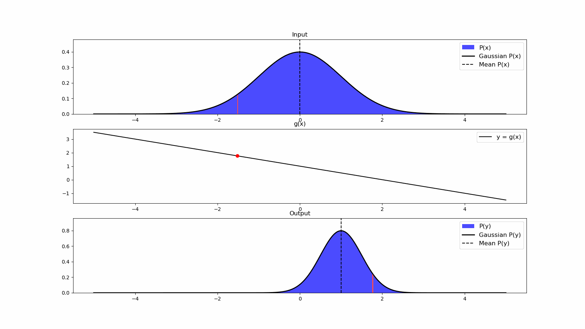
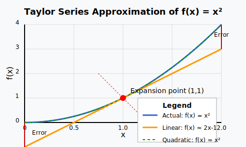

# Sensor Fusion ## **Design of Autonomous Systems** ### csci 6907/4907-Section 86 ### Prof. **Sibin Mohan** --- remember this? <img src="img/ekf/bayes.lidar.4.png" width="1500"> Note: - sensors and state estimation, by its very probabilistic and noisy nature, introduces errors. --- <img src="img/ekf/bayes.lidar.4.png" width="1100"> <br> question is → _"**which** sensor do we believe?"_ --- this might be the **wrong** question! --- instead of picking one vs. the other --- instead of picking one vs. the other ### use **both**? --- ## sensor fusion --- ## sensor fusion > process of combining sensory data from multiple sources to obtain **more accurate information** than would be possible using individual sensors alone --- individual sensors have inherent limitations: --- individual sensors have inherent limitations: - **limited accuracy** → measurement errors --- individual sensors have inherent limitations: - **limited accuracy** → measurement errors - **limited range/coverage** → may only work in certain conditions --- individual sensors have inherent limitations: - **limited accuracy** → measurement errors - **limited range/coverage** → may only work in certain conditions - **limited sampling rates** → cannot always update fast enough --- individual sensors have inherent limitations: - **limited accuracy** → measurement errors - **limited range/coverage** → may only work in certain conditions - **limited sampling rates** → cannot always update fast enough - **sensor-specific weaknesses**: GPS fails indoors, cameras in darkness --- ## sensor fusion - combines complementary data from multiple sensors --- ## sensor fusion - combines complementary data from multiple sensors - each with different strengths/weaknesses --- ## sensor fusion - combines complementary data from multiple sensors - each with different strengths/weaknesses **goal** → produce combination that's more accurate, complete, robust --- so, how do we **fuse** sensors? --- can we use the **kalman filter** for sensor fusion? --- can we use the **kalman filter** for sensor fusion? <br> ## **yes**! --- **example**: consider the following - state, $\mathbf{x}=\left[\begin{array}{l}x \newline \dot{x}\end{array}\right]$ --- **example**: consider the following - state, $\mathbf{x}=\left[\begin{array}{l}x \newline \dot{x}\end{array}\right]$ - two sensors, $\mathbf{z}=\left[\begin{array}{c}z_{G P S} \newline z_{\text {odom }}\end{array}\right]$ Note: - (GPS → metres, odometry → feet) --- using parameters for Kalman Filter, $$ \begin{aligned} \mathbf{H} =\left[\begin{array}{cc} 1 & 0 \newline 1 / 0.3048 & 0 \end{array}\right] \quad \quad \mathbf{R} =\left[\begin{array}{cc} \sigma_{\text {GPS }}^{2} & 0 \newline 0 & \sigma_{\text {Odom }}^{2} \end{array}\right] \end{aligned} $$ --- substituting this into the Kalman Filter equations, $$ \begin{aligned} \mathbf{y} = & \mathbf{z}-\mathbf{H} \overline{\mathbf{x}} \newline \end{aligned} $$ --- substituting this into the Kalman Filter equations, $$ \begin{aligned} \mathbf{y} = & \mathbf{z}-\mathbf{H} \overline{\mathbf{x}} \newline \mathbf{y} = & {\left[\begin{array}{c} z_{G P S} \newline z_{\text {Odom }} \end{array}\right]-\left[\begin{array}{cc} 1 & 0 \newline 1 / 0.3048 & 0 \end{array}\right]\left[\begin{array}{l} \bar{x} \newline \bar{\dot{x}} \end{array}\right] } \newline \end{aligned} $$ --- substituting this into the Kalman Filter equations, $$ \begin{aligned} \mathbf{y} = & \mathbf{z}-\mathbf{H} \overline{\mathbf{x}} \newline \mathbf{y} = & {\left[\begin{array}{c} z_{G P S} \newline z_{\text {Odom }} \end{array}\right]-\left[\begin{array}{cc} 1 & 0 \newline 1 / 0.3048 & 0 \end{array}\right]\left[\begin{array}{l} \bar{x} \newline \bar{\dot{x}} \end{array}\right] } \newline \mathbf{x} = & \overline{\mathbf{x}}+{\mathbf{K} \mathbf{y}} \newline \end{aligned} $$ --- substituting this into the Kalman Filter equations, $$ \begin{aligned} \mathbf{y} = & \mathbf{z}-\mathbf{H} \overline{\mathbf{x}} \newline \mathbf{y} = & {\left[\begin{array}{c} z_{G P S} \newline z_{\text {Odom }} \end{array}\right]-\left[\begin{array}{cc} 1 & 0 \newline 1 / 0.3048 & 0 \end{array}\right]\left[\begin{array}{l} \bar{x} \newline \bar{\dot{x}} \end{array}\right] } \newline \mathbf{x} = & \overline{\mathbf{x}}+{\mathbf{K} \mathbf{y}} \newline \end{aligned} $$ $\mathbf{K}$ and $\mathbf{y}$ are $2 \times 2$ matrices → it **mixes the GPS and odometry**! --- but Kalman filter doesn't work for **non-linear** systems --- but Kalman filter doesn't work for **non-linear** systems what _exactly_ is the problem with nonlinear systems? --- Kalman Filter (and any Bayes' Filter) requires → Gaussians --- Kalman Filter (and any Bayes' Filter) requires → Gaussians **breaks down** in the face of non-linearities --- Gaussians and non-linear functions --- Gaussians and non-linear functions |mixing of|result | |:--------|:------| | two Gaussians | Gaussian | --- Gaussians and non-linear functions |mixing of|result | |:--------|:------| | two Gaussians | Gaussian | | Gaussian and linear function | Gaussian | --- Gaussians and non-linear functions |mixing of|result | |:--------|:------| | two Gaussians | Gaussian | | Gaussian and linear function | Gaussian | | Gaussian and non-linear function | **non-Gaussian**| --- Gaussians and non-linear functions |mixing of|result | |:--------|:------| | two Gaussians | Gaussian | | Gaussian and linear function | Gaussian | | Gaussian and non-linear function | **non-Gaussian**| | linear and non-linear function | **non-Gaussian** | --- Gaussians and non-linear functions |mixing of|result | |:--------|:------| | two Gaussians | Gaussian | | Gaussian and linear function | Gaussian | | Gaussian and non-linear function | **non-Gaussian**| | linear and non-linear function | **non-Gaussian** | | two non-linear function | **non-Gaussian** | || --- **example**: Gaussian being transformed using another function, $y=g(x)$ --- case **1**: $g(x)$ is **linear**, _e.g._, $$ g = 0.5*x + 1 $$ --- <!-- .slide: data-background="white" --> case **1**: $g(x)$ is **linear**, _e.g._,  Note: - we can see the result and it is a nice Gaussian --- case **2**: $g(x)$ is **non-linear**, _e.g._, $$ g = \cos(3 * (\frac{x}{2} + 0.7)) * \sin(1.3 * x)—1.6 * x $$ --- <!-- .slide: data-background="white" --> case **2**: $g(x)$ is **non-linear**, _e.g._, <img src="img/fusion/ekf/gaussian_non_linear.gif" width="1500"> --- <!-- .slide: data-background="white" --> case **2**: $g(x)$ is **non-linear**, _e.g._, <img src="img/fusion/ekf/gaussian_non_linear.gif" width="1300"> **output is no longer a Gaussian** --- output is no longer a Gaussian violates **unimodality assumption** of Kalman Filter → requires **single peak** --- ## **extended kalman filter** --- ## **extended kalman filter (ekf)** - **linearization** → **approximate** a non-linear function, $g(.)$ --- ## **extended kalman filter (ekf)** - **linearization** → **approximate** a non-linear function, $g(.)$ - by a linear function that is **tangent to** $g(.)$ --- ## **extended kalman filter (ekf)** - **linearization** → **approximate** a non-linear function, $g(.)$ - by a linear function that is **tangent to** $g(.)$ - at the **point of interest** --- EKF → uses [Taylor Series Expansion](#taylor-series) --- a brief detour... --- ### Taylor Series --- ### Taylor Series **approximates** function → around **specific point** using polynomial terms --- ### Taylor Series **approximates** function → around **specific point** using polynomial terms **infinite** sum of polynomials → function’s **derivatives** at single point, $a$ --- ### Taylor Series $$ f(x) = f(a) + f'(a)(x-a) + \frac{f''(a)}{2!}(x-a)^2 + \frac{f'''(a)}{3!}(x-a)^3 + \ldots $$ --- ### Taylor Series $$ f(x) = f(a) + f'(a)(x-a) + \frac{f''(a)}{2!}(x-a)^2 + \frac{f'''(a)}{3!}(x-a)^3 + \ldots $$ | term | description | |:-----|:------------| | $f(a)$ | the function value at point $a$ | --- ### Taylor Series $$ f(x) = f(a) + f'(a)(x-a) + \frac{f''(a)}{2!}(x-a)^2 + \frac{f'''(a)}{3!}(x-a)^3 + \ldots $$ | term | description | |:-----|:------------| | $f(a)$ | the function value at point $a$ | | $f'(a)$, $f''(a)$, etc. | the derivatives of $f$ evaluated at point $a$ | --- ### Taylor Series $$ f(x) = f(a) + f'(a)(x-a) + \frac{f''(a)}{2!}(x-a)^2 + \frac{f'''(a)}{3!}(x-a)^3 + \ldots $$ | term | description | |:-----|:------------| | $f(a)$ | the function value at point $a$ | | $f'(a)$, $f''(a)$, etc. | the derivatives of $f$ evaluated at point $a$ | | $(x-a)$ | represents the **deviation** from the expansion point | || --- <!-- .slide: data-background="white" --> ### Taylor Series expansions <img src="img/fusion/ekf/taylor_series_degrees.webp" width="700"> --- <!-- .slide: data-background="white" --> ### Taylor Series expansions <div class="multicolumn"> <div> <img src="img/fusion/ekf/taylor_series_degrees.webp" width="700"> </div> <div> <br> <br> - higher-order Taylor Expansions → **closer approximation** of original function </div> </div> --- <!-- .slide: data-background="white" --> ### Taylor Series expansions <div class="multicolumn"> <div> <img src="img/fusion/ekf/taylor_series_degrees.webp" width="700"> </div> <div> <br> <br> - higher-order Taylor Expansions → **closer approximation** of original function - computation → **intractable**! </div> </div> --- example **1**: $f(x) = x^2$ → expanded around $a = 1$ Note: - f(x) is non-linear here --- example **1**: $f(x) = x^2$ → expanded around $a = 1$ 1. $f(1) = 1$ --- example **1**: $f(x) = x^2$ → expanded around $a = 1$ 1. $f(1) = 1$ 2. $f'(x) = 2x$, so $f'(1) = 2$ --- example **1**: $f(x) = x^2$ → expanded around $a = 1$ 1. $f(1) = 1$ 2. $f'(x) = 2x$, so $f'(1) = 2$ 3. first-order Taylor approximation: $f(x) \approx 1 + 2(x-1)$ --- example **1**: $f(x) = x^2$ → expanded around $a = 1$ 1. $f(1) = 1$ 2. $f'(x) = 2x$, so $f'(1) = 2$ 3. first-order Taylor approximation: $f(x) \approx 1 + 2(x-1)$ 4. this gives us a **linear approximation**: $f(x) \approx 2x - 1$ --- <!-- .slide: data-background="white" --> **linear approximation**: $f(x) \approx 2x - 1$  --- example **2**: non-linear function from before: $$ g = \cos(3 * (\frac{x}{2} + 0.7)) * \sin(1.3 * x) — 1.6 * x $$ --- <!-- .slide: data-background="white" --> $$ g = \cos(3 * (\frac{x}{2} + 0.7)) * \sin(1.3 * x) — 1.6 * x $$ **first order** Taylor approximation (in <span style="color:red"><b>red</b></span>) <img src="img/fusion/ekf/taylor.1.webp" width="1100"> --- <!-- .slide: data-background="white" --> **first order** Taylor approximation (in <span style="color:red"><b>red</b></span>) <img src="img/fusion/ekf/taylor.1.webp" width="1100"> not a very good approximation! --- what do we care about? --- what do we care about? - only concerned with approximation at → posterior --- what do we care about? - only concerned with approximation at → posterior - **recompute** posteriors → **very short time period** --- what do we care about? - only concerned with approximation at → posterior - **recompute** posteriors → **very short time period** - approximation → quite good in **close vicinity** of point of interest --- let's look at our approximation again --- <!-- .slide: data-background="white" --> let's look at our approximation again <img src="img/fusion/ekf/taylor.1.webp" width="1100"> --- <!-- .slide: data-background="white" --> let's look at our approximation again <img src="img/fusion/ekf/taylor.1.webp" width="700"> <img src="img/fusion/ekf/taylor.2.webp" width="1100"> --- <!-- .slide: data-background="white" --> let's look at our approximation again <img src="img/fusion/ekf/taylor.1.webp" width="700"> <img src="img/fusion/ekf/taylor.2.webp" width="1100"> **quite good!** --- EKF → **first-order Taylor expansions** --- EKF → **first-order Taylor expansions** - for nonlinear system and - measurement functions --- EKF → **first-order Taylor expansions** - for nonlinear system and - measurement functions linearizing nonlinear functions → **around current estimate** --- ### ekf | **equations** --- ### ekf | **equations** **state equation**: $x_k = f(x_{k-1}, u_k) + w_k$ --- ### ekf | **equations** **state equation**: $x_k = f(x_{k-1}, u_k) + w_k$ **measurement equation**: $z_k = h(x_k) + v_k$ --- ### ekf | **equations** **state equation**: $x_k = f(x_{k-1}, u_k) + w_k$ **measurement equation**: $z_k = h(x_k) + v_k$ <br> <br> $f(.)$ and $h(.)$ → non-linear --- ### ekf | equations | **linearization** --- ### ekf | equations | **linearization** $$ f(x_{k-1}, u_k) \approx f(\hat x_{k-1|k-1}, u_k) + F_k(x_{k-1} - \hat{x}_{k-1|k-1}) $$ --- ### ekf | equations | **linearization** $$ f(x_{k-1}, u_k) \approx f(\hat x_{k-1|k-1}, u_k) + F_k(x_{k-1} - \hat{x}_{k-1|k-1}) $$ $h(x_k) \approx h(\hat x_{k|k-1}) + H_k(x_k - \hat{x}_{k|k-1})$ --- ### ekf | equations | **linearization** $$ f(x_{k-1}, u_k) \approx f(\hat x_{k-1|k-1}, u_k) + F_k(x_{k-1} - \hat{x}_{k-1|k-1}) $$ $h(x_k) \approx h(\hat x_{k|k-1}) + H_k(x_k - \hat{x}_{k|k-1})$ <br> - $F_k$ → **Jacobian** of $f$ w.r.t. $x$ - $H_k$ → **Jacobian** of $h$ w.r.t. $x$ --- ### Jacobian matrices --- ### Jacobian matrices - contain **all** partial derivatives of nonlinear functions --- ### Jacobian matrices - contain **all** partial derivatives of nonlinear functions - w.r.t each state variable --- ### Jacobian matrices - contain **all** partial derivatives of nonlinear functions - w.r.t each state variable - evaluated at the current estimat --- ### Jacobian matrices - contain **all** partial derivatives of nonlinear functions - w.r.t each state variable - evaluated at the current estimate represent **sensitivity** of functions → to **small changes** in state --- ### Jacobian matrices state is a **vector** → need **partial derivaties** --- ### ekf | **steps** --- ### ekf | steps | **prediction** $$\hat x_{k|k-1} = f(\hat{x}_{k-1|k-1}, u_k)$$ --- ### ekf | steps | **prediction** $$\hat x_{k|k-1} = f(\hat{x}_{k-1|k-1}, u_k)$$ $$P_{k|k-1} = F_kP_{k-1|k-1}F_k^T + Q_k$$ Note: - x is state - P is uncertainty/covariance --- ### ekf | steps | **update** --- ### ekf | steps | **update** $$K_k = P_{k|k-1}H_k^T(H_kP_{k|k-1}H_k^T + R_k)^{-1}$$ Note: - K is kalman gain --- ### ekf | steps | **update** $$K_k = P_{k|k-1}H_k^T(H_kP_{k|k-1}H_k^T + R_k)^{-1}$$ $$\hat x_{k|k} = \hat x_{k|k-1} + K_k(z_k - h(\hat x_{k|k-1}))$$ --- ### ekf | steps | **update** $$K_k = P_{k|k-1}H_k^T(H_kP_{k|k-1}H_k^T + R_k)^{-1}$$ $$\hat x_{k|k} = \hat x_{k|k-1} + K_k(z_k - h(\hat x_{k|k-1}))$$ $$P_{k|k} = (I - K_kH_k)P_{k|k-1}$$ --- please read the textbook [chapter on ekf](https://autonomy-course.github.io/textbook/autonomy-textbook.html#extended-kalman-filter-ekf) for actual details!